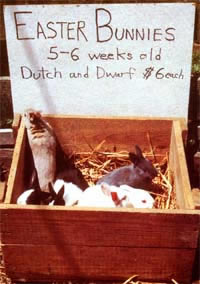

Hopping Into The Easter Bunny Business
November/December 1983
With a little planning and preparation in the weeks to come, you could be . . .
by Phebe Whitehead
Have you ever wondered where pet shops get all those adorable little nose-twitching bundles of fur they sell for inflated prices at Easter every year? Well, you can be sure the critters aren't supplied by some giant "hareticultural" corporation! Instead, they're bred by small-scale backyard rabbit farmers . . . folks who are "in business" to produce meat for family use or for sale, but who've also learned to adjust their stock's winter breeding calendars to fill the strong demand of the Peter Cottontail rush.
The prime time for selling Easter bunnies is, of course, during the weeks just before that springtime holiday. But I've found that a lot of people will still be buying longears up to a couple of weeks after the last dyed egg has been eaten. (Usually, these late buyers are parents responding to the pleas of their children who have seen the small bundles of fluff in the homes of friends . . . and have then waged a successful campaign to get one of their own.)
A backyard producer may easily sell a hundred young carrot-munches during the Easter season at $5.00 to $10.00 or more each (that works out to a profit that ranges from $3.00 to as much as $7.00 apiece). And if-like me-you're already raising rabbits for meat and fur, this business is a particularly cost- and labor-efficient endeavor . . . because it takes little extra time, space, and feed to care for the additional animals once you're set up and accustomed to the chores.
(Normally, I can provide routine care for 20 breeders and their numerous offspring in a scant ten minutes a day, and that includes all the feeding, watering, and cage cleaning chores.) And if you're not already a bunny breeder, now's as good a time as any-and better than most!-to get started. So read on, and I'll tell you how I've turned enjoyable "work" into a sizable increase in my yearly income.
SMALL BREEDS = BIG SALES
Since the larger bunnies that are normally raised for their meat and fur-such as Californian and New Zealand rabbits-are not the most suitable for sale as cuddly companions, you may want to add a new variety or two to your hutches. Though it's true that some of the "meat" animals do show up in pet stores in late March and early April, buyers recently have become aware that there are miniature breeds that make more appealing pets, eat less, and require smaller cages than the usual sorts. As a result, the "mini" rabbits bring a premium price when wholesaled to pet outlets . . . while the larger hoppers often have to be sold at a discount and are sometimes rejected outright.
The most popular of these smaller breeds is the Dutch, which is a medium-sized animal weighing four to seven pounds at maturity, and the Hobbit-sized Netherlands Dwarf . . . a very little rabbit (two to four pounds when full grown) with short ears and big, calf like eyes. (Beware of the Polish Dwarf: It's a laboratory breed that has ears so short that it looks more like a guinea pig than an Easter bunny.)
LEAPING INTO THE RABBIT TRADE
And exactly where does one get starter stock for these smaller, less common breeds? Well, it's no problem to locate Dutch and Dwarf types at rabbit and livestock auctions and shows. Check the ads in your local newspapers, too . . . and look for signs when driving past nearby farms and urban homesteads. Although auctions are often the least expensive sources, you'll need to know which breed characteristics to look for . . . and be willing to spend several evenings searching for likely animals in this way.
Weaned bunnies-called "juniors" by professional rabbit farmers-are often better bets than mature animals that might be up for sale because they've been tried and found lacking in breeding ability. If you do buy juniors, make sure that they'll be at least six months old by the middle of December and thus able to mate in time to meet the Easter demand. It's always smart to purchase new stock well in advance of any planned breeding season so that the animals can be quarantined, checked for disease, and-if necessary-treated to prevent infections from spreading through your entire rabbitry.
When planning the breeding schedule, keep in mind that another major advantage of the smaller varieties over the larger-in addition to their minimal demands for food and space-is that they are marketable for a longer time. A Netherlands Dwarf or Dutch will stay small and appealing for weeks longer than will one of the rangy meat critters, allowing more than one litter per doe to be sold at the peak marketing time.
And that brings us to the question of when your animals should be sold. Standard rabbit farming know-how recommends weaning kitlings at eight weeks, but Easter bunnies are usually sold when they're only four to six weeks old (and they seem to do just fine anyway). You see, visual appeal is the biggest single selling point in the rabbits-for-pets business, and (although none should be sold before they're three weeks old) there's no doubt that the younger a bunny is, the cuter-and therefore more marketable-it will be.
Of course, you should exercise restraint and good judgment in deciding on selling age. I know of one pet store that buys fast growing New Zealands from a meat-rabbit raiser when the youngsters are only three weeks old. Then, when the animals have grown too large to catch the fancy of buyers, the shop owner exchanges them for more little ones. In my opinion, however, weaning rabbits at three weeks is unfair . . . to the customers and (especially!) to the furry babies.
BREEDING CALENDAR
Given three bits of information, you can compute an accurate breeding calendar and be sure that those big-eared fuzz balls will be ready for the pet market: [1] the date on which Easter will fall '(for 1984, it's April 22), [2] the gestation period for rabbits (one month), and [3] the minimum age at which you're willing to wean and sell the springtime litters (personally, 1 don't like to market the kitlings when they're less than five weeks old).
Since we're coming up on the time when you'd want to start the breeding cycle for Easter 1984, let's take a look at what you'll need to do (and when).
December 15, 1983:Breed all your does so they'll give birth (the word is "kindle" in rabbit raiser jargon) around January 15, 1984. The litters from this first breeding will be useful for early-season sales, starting late in February. The females that bear from this mating should be bred again on February 5 . . . the little cottontails produced from this mating will be of optimum age for Easter sales. (And yes, I know that gives the mamas only three weeks from giving birth to rebreeding, but I guess that's why we have the cliche "multiplying as fast as rabbits"!)
The females that failed to produce litters on January 15 (after the first mating) should be given another honeymoon with the bucks on January 20 so that they'll kindle around February 20. Then, on April 1, the resulting kits will be six weeks old . . . a prime age for early Easter sales. And you might breed these does a third time on February 5, just in case the second mating didn't prove any more fruitful than the first.
s February 5, 1984: Breed the mothers that produced litters on January 15 . . . and then rebreed them a week later, in case of "misses". The bunnies born around March 7 will be five weeks old on the weekend of Palm Sunday (April 15, 1984). These will be your frontline Easter babies for selling either to pet shops or directly to the public.
February 25: Once more, try the does that didn't produce earlier. The little ones that will probably result from this mating will be five weeks old by the first and second weeks after Easter, which is about as late as you can hope to sell to this market.
MATCHMAKING
In order to produce two litters per doe for the Easter market, I usually give some of my furry females several trips to the bridal suite. Most lady rabbits don't need that much of an opportunity to start bearing, though, and the majority of mine have no trouble producing two litters apiece in time for the holiday.
Here's how I handle the matchmaking: I simply carry a female to the cage of whichever buck best matches her color and markings, and leave them alone together for about half an hour. After doing this in the morning, I repeat the procedure in the afternoon of the same day, and maybe reintroduce them a third time the following morning . . . to assure large litters.
It's a good idea to try to get a variety of colors and markings in both the Dutch and Dwarf breeds, because-like all consumers-bunny buyers enjoy having choices. The Dutch is most frequently black, but other typical shades include gray, chocolate, and a beautiful golden blond. Netherlands Dwarfs display several colors, but they're never marked with the white shoulders that are rather common in the Dutch.
An especially interesting pattern appears on the Siamese Dwarf, in which the "points" (nose, ears, and feet) have darker markings than the rest of the body.
It takes experience and experimentation to be able to select parents that will produce offspring of a certain shade or pattern. Some hues-such as black in the Dutch are dominant, while others are genetically "delicate". Crossing a pair with the latter coloration may take the babies straight back to the ticked brown of wild hares. A few of these will sell, but probably only a few. So, cull a doe that produces too many wild-colored young . . . or at least find a different mate for her, to improve the appearance of her litters.
Dutch/Dwarf mixes usually result in intermediate-sized offspring with rather uninteresting markings. I seldom attempt this cross, since the rabbits that will be produced are less marketable than would be either of the parent breeds.
And, when you're using high-intensity production cycles like the one outlined here, it's always wise to keep a close watch when does are ready to kindle. Occasionally, a kit is born on the wire instead of in the nest, or is dangerously placed underneath the mother. If you're Johnny-on-the-spot, such babies can be saved.
Keep in mind, too, that-when you're caring for the females that "catch" the initial time around and then again during the second breeding cycle-it's best to remove the first litter a few days before the next is born. This gives the mother a bit of a rest and allows you to build a fresh kindling nest in her cage.
HEALTH THREATS
It's important to watch for disease during the heavy production season. A rabbit with the "sniffles" may not just have a cold: It could have a viral infection. And a bunny that has diarrhea (especially if the animal makes a sloshing sound when picked up and shaken gently) may not merely have an "upset tummy". It could have enteritis, which is serious and contagious, and can cause the rabbit to lose weight suddenly, acquire rough fur, and spend all its time before dying with its front paws immersed in its water dish.
My rule is that any animal that seems even a little sick probably won't survive the stress of adjusting to a new home, and therefore should not be sold!
THIS LITTLE BUNNY WENT TO MARKET . . .
There are three ways to sell your Easter hoppers, but only two of them are really profitable. The first financially wise marketing scheme is to wholesale your young lettuce lovers to pet shops. Or you can sell them directly to the public. Then, although it has considerably less moneymaking potential, the third possibility is to hawk your leftovers at livestock auctions.
Pet stores buy most of their bunnies during the two weeks before Easter, so make a list of all the shops within a comfortable traveling distance, and go visit them early. Tell the owners what breeds, ages, colors, and quantities you can provide. (I've found it a good sales-clincher to bring along a few sample juniors in an attractive carrier so that the storekeeper or manager can inspect the animals in advance.) When you make your sales, deliver only healthy rabbits that will please both the owner of the store and his or her customers. That way, you'll be assured of getting repeat business, come next spring.
To spread your own brand of Easter cheer by selling your big-eared babies directly to the public, place an ad in the local newspaper . . . preferably on the weekend before the eggs-and bonnets holiday. This will likely bring customers in droves, particularly if they've already checked the pet stores and are aware that you're selling your animals for about half the usual price. (In my part of Maryland, the average retail outlet charges between $12 and $20 for Dutches and Netherlands Dwarfs.)
Be aware that when you sell direct, you'll have to take on some of the chores that otherwise would be handled by the pet shop. For one thing, people often want to know the gender of their new pet ("Is it a Charlie or a Charlene?"). To sex a very young rabbit, hold the squirming youngster in your right hand, perhaps by the loose skin of the back if the bunny scratches vigorously, and feel around the reproductive area with the thumb and forefinger of your left hand. A female has a long, line like opening running parallel to the length of her body, while a boy baby has an opening that protrudes in the form of a small circle. (The difference becomes much plainer as the animals mature.)
I try not to bore my customers with a lot of unwanted advice on caring for rabbits, but I do make a practice of recommending against buying two males and keeping them in the same cage, since-by the time they're five months of-they'll doubtless be slugging it out!
Merchandising requires the seller to provide carry-home packaging, as hardly any off-the street shoppers will bring along boxes. So keep a good supply of supermarket cartons on hand, and package up some pellet food in plastic Ziploc-type bags (to sell at a reasonable profit). By doing so, you'll increase your income a little, and your buyers will be grateful for this "starter food" . . . particularly because many sales are made on weekends and evenings, when I feed stores are closed.
Since Easter is an occasion for surprise gift giving in some families, people may call on the phone and ask you to "hold" little Mr. or Miss Cottontail until the holiday rolls around. I don't provide that service unless I know and trust the caller. However, I do let a customer pay in advance and pick up the bunny the day before Easter. That requires having a good system to prevent my selling the same critter twice, though. (Tying color-coded ribbons around their necks works well for me.)
. . . AND THIS LITTLE BUNNY STAYED HOME
After Easter you may watt to breed rcplacement animals for your rabbitry . . . and, since you could have an opportunity to sell a few fuzzy-tails throughout the year to retail outlets that have a slow but steady demand for pet hoppers, it doesn't hurt to have a few little ones on hand at all times.
If you've been feeding commercial pellets during the early spring (to promote maximum growth in the baby bunnies), you can now ease up, supplementing that feed with the garden weeds that become so plentiful at this time of year. Later, summer hay will lend more variety to your "herd's" menu.
When the brisk activity of the spring holiday season is over, consider culling your breeding stock to assure better production next year. Does should be replaced if they didn't take proper care of their litters or if they didn't produce enough kitlings. Poorly performing bucks should also be removed from your breeding crew. At this stage of the game, well-kept records come in handy . . . even if they're as minimal as notebook listings of which does were mated to which bucks when, how many babies each mother kindled, and how many she raised successfully to weaning age.
I have a fairly large-scale rabbitry, and began raising bunnies for the Easter market more than a half-dozen years ago. I've found this an easy source of extra homestead income, with little cost or labor required above what I normally do to maintain my meat-and-fur animals. And what's proven to be even more rewarding than the extra dollars I bring in this way each spring is the excitement and joy I see in the faces of my customers-young and old-when they hold their new pets for the first time.
In fact, beyond the profit motive, simply raising and selling these gentle, lovable creatures is a great way to experience-and share with others-the joys of spring.
EDITOR'S NOTE: For a brief but concise overview of professional rabbit farming, see the article "Rabbits" on page 18 of MOTHER NO. 15 (turn to page 48 for back issue ordering information). Or, if you'd like, some book-length reading, a thorough guide can be found in the 154 pages of Robert Bennett's paperback, Raising Rabbits the Modern Way. This is an up-to-date manual covering the selection, purchase, rearing, care, and breeding of bunnies for food, sale, and show. It's available from Mother's Bookshelf' (order number 71029) for $5.95 (see our catalog insert for book ordering information).
As a special "gift" to both the bunnies you sell and their new owners, you might consider condensing some of the more important aspects of the knowledge you gain through reading such material as that listed above (and from your own experience) into a "How to Care for Your New Pet" pamphlet to accompany each little critter to its new home. Your customers will appreciate it, and if Peter Cottontail could speak, he'd undoubtedly shout a hearty "Thanks!".
 |
 |
|